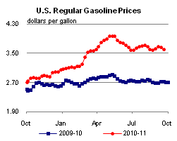
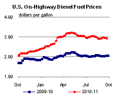
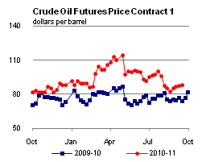
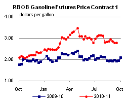
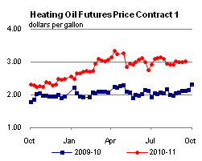
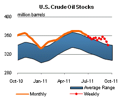
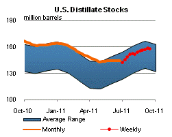
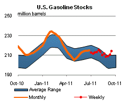
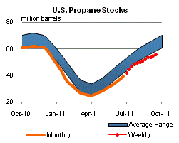

Released: September 21, 2011
Next Release: September 28, 2011
Sanctions on Syria unlikely to significantly impact international oil markets
Syria has recently become the target of tightened international sanctions prohibiting its oil exports to the United States and European Union. While Syria and Libya are both Mediterranean crude oil producers undergoing major political strife, differences in the amount of oil they produce and export, its quality, and the scope of the disruption all suggest that the situation in Syria, in contrast to that in Libya, is unlikely to have a significant direct impact on world oil markets.
Syria's oil output of less than 400,000 barrels per day (bbl/d) in 2011 makes it the only significant oil-producing country in the eastern Mediterranean, but still a relative minnow compared to Libya's pre-unrest total oil production of over 1.7 million bbl/d. Estimated net crude oil exports from Syria were only 109,000 bbl/d in 2010, far less than those from Libya (1.5 million bbl/d in 2010). More than 90% of Syria's oil exports went to countries in the European Union (E.U.), with Germany, Italy, France and the Netherlands as the largest buyers. But while crude exports to the E.U. thus provided 30% of Syrian government revenues in 2010, they made up only about 1% of E.U. petroleum demand, European Commission data show. This contrasts with Italy's approximately 20% dependence on Libyan crude oil imports last year. Unlike Libya's crude, which is light and sweet and for which there are few readily available substitutes, the bulk of Syria's crude oil is relatively heavy and sour.
Various U.S. sanctions against Syria were enacted starting in 2004, including the Syria Accountability Act (SAA) of 2004, which prohibits the export of most goods containing more than 10% U.S.-manufactured component parts to Syria. Other sanctions include measures against the Commercial Bank of Syria resulting from the USA Patriot Act and various Executive Orders denying certain Syrian citizens and entities access to the U.S. financial system due to their participation in proliferation of weapons of mass destruction, association with Al Qaida, the Taliban or Osama bin Laden, or destabilizing activities in Iraq and Lebanon. Until recently, U.S. measures did not specifically target oil exports, though they may have hampered Syrian efforts to arrest a decline in domestic crude production by reducing opportunities for exploration and production partnerships with foreign companies.
In response to the indiscriminate use of deadly force against dissent by Damascus, U.S. sanctions on Syria were extended on August 18 to include a ban on the import of crude oil or petroleum products of Syrian origins. Prior to the new round of U.S. sanctions, the United States infrequently imported crude oil, and only a small amount of refined products, from Syria. More significantly, on September 2, the E.U. followed suit with its own ban on imports of Syrian oil. This ban, which is set to take effect next month, is designed to deprive Syria of oil revenue and looks bound to further hinder its efforts to revive its oil production and expand its ailing petroleum industry. The E.U. sanctions will prevent roughly 100,000 bbl/d of mostly heavy, sour Syrian crude exports from reaching their traditional European markets. U.S. sanctions will preclude that oil from being redirected towards the United States.
European importers of Syrian crude will need to source alternative supplies, which could indirectly affect U.S. sour crude markets. Recently, sour crude markets in Europe have shown exceptional strength, with prices for Russian Urals, one of the region's main sour crude streams, swinging to an unusual premium to those for light, sweet Brent. Following reduced loading programs at Russia's Baltic Sea port of Primorsk, a key Urals export terminal, the sanctions may further support this Urals premium. Sanctions targeting Syrian exports, however, may not necessarily disrupt Syrian crude production, which so far, in contrast with the situation in Libya, has been unaffected by civil unrest. Should Syria continue to produce crude, the effects of sanctions will be different than if that crude was taken off the market altogether. Syrian exports will likely find other markets, possibly in Asia, where they might help replace exports from Yemen disrupted by civil unrest.
While the situation in Syria raises many concerns, its direct implications for international oil markets are of a different order of magnitude than those surrounding the situation in Libya that was most recently reviewed last week.
Gasoline prices fall six cents; diesel prices also down
The U.S. average retail price of regular gasoline fell for the second straight week, sliding six cents to reach $3.60 per gallon. The average price is $0.88 per gallon higher than last year at this time. Leading the move down, the Midwest price plummeted almost 11 cents from last week's average. The Gulf Coast price shed six cents on the week, while the East Coast price was almost a nickel lower. The average on the West Coast was down about a penny this week. Moving in the other direction, the average gasoline price in the Rocky Mountains increased less than a penny. At $3.86 per gallon, the average gasoline price is highest on the West Coast. It is lowest on the Gulf Coast at $3.41 per gallon.
The national average diesel price fell almost three cents to $3.83 per gallon. The diesel price is $0.87 per gallon higher than last year at this time. Diesel averages were down across all the regions, with the biggest decrease coming in the Midwest where diesel prices dropped more than four cents. Gulf Coast and East Coast diesel prices both shed about two and a half cents on the week. Moving west, the Rocky Mountain price was down a penny while the West Coast diesel average fell less than a cent but remained the most expensive among the major regions at $3.98 per gallon. The lowest diesel price, on average, is on the Gulf Coast at $3.77 per gallon.
Propane inventories gain slightly but remain below typical seasonal level
Last week, total U.S. inventories of propane added 0.6 million barrels to end at 55.4 million barrels (which is below the typical level for this time of year) as crop drying season approaches. The Midwest and Gulf Coast regions each added 0.2 million barrels last week. Meanwhile, the East Coast and Rocky Mountain/West Coast regions both gained 0.1 million barrels of propane inventories. Propylene non-fuel use inventories represented 5.5 percent of total propane inventories.
Text from the previous editions of This Week In Petroleum is accessible through a link at the top right-hand corner of this page.
|  |  | ||||||
| Retail Data | Changes From | Retail Data | Changes From | ||||
| 09/19/11 | Week | Year | 09/19/11 | Week | Year | ||
| Gasoline | 3.601 | Diesel Fuel | 3.833 | ||||
|  |  | ||||||||||||||||||||||||||
|
 | ||||||||||||||||||||||||||
| *Note: Crude Oil Price in Dollars per Barrel. | |||||||||||||||||||||||||||
|  |  | ||||||
|  |  | ||||||
| Stocks Data | Changes From | Stocks Data | Changes From | ||||
| 09/16/11 | Week | Year | 09/16/11 | Week | Year | ||
| Crude Oil | 339.0 | Distillate | 157.6 | ||||
| Gasoline | 214.1 | Propane | 55.359 | ||||